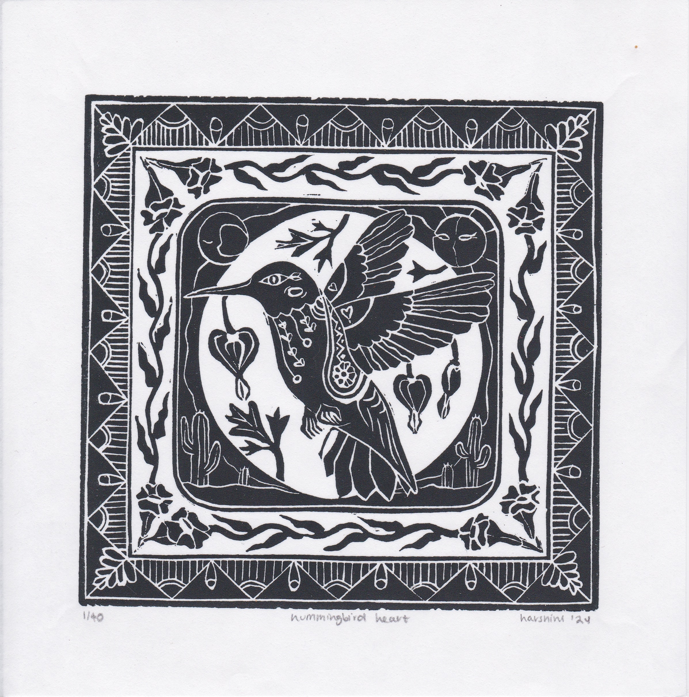

desert story,
screenprint on paper,
2023
screenprint on paper,
2023
harshini enjoys printmaking of all kinds.
she graduated from brown university in 2023.
full portfolio, resume available upon request
more projects below ↓
linocut/block print


each block print is a meditation. using personal and cultural symbols, i contemplate our relationship to our environment.
"hummingbird heart" was featured in the 2024 Southwest Print Fiesta print exchange in Silver City, New Mexico.

bookmaking: desert, living book


this book depicts life in the desert, which is often mischaracterized as lifeless and barren.
it uses letterpress printing, drum leaf binding, and pop-up/paper engineering techniques, learned
during a RISD course called Letterpress and Non-Stitch Bookbinding.
screenprint: absurdist fish


this project places fish into scenes from my favorite Western existentialist and absurdist stories. from left to right: Metamorphosis by Franz Kafka, Nausea by Jean-Paul Sartre, and Waiting for Godot by Samuel Beckett. i hoped to convey the feeling that came to me as i read, through these bookplate-style interpretations.
risograph printing


this past year, i've enjoying exploring and experimenting with the risograph machine!
return to top ↑
website created with love by harshini, © 2023-25, last updated september 25, 2025